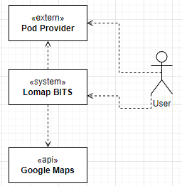
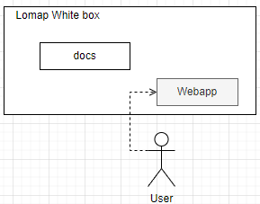
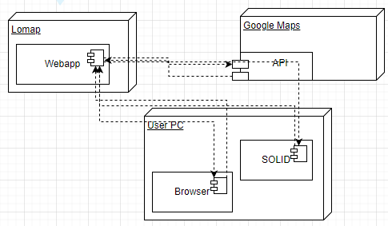

1. Introduction and Goals
Lomaps BITS is an innovative maps project that has been brought to life by Happy SW, a software development company hired by Brussels. Where you can add markers, review them and watch the marker of your friends. Not only that but to encourage the activity among the young people BITS has a level system that will give you points for every marker you add.
1.1. Dedicatory
I wanted to thank Patri and Pablo from lomap_en2a that have helped me with all the doubts I’ve had along the time, as long as allowing me to use some parts of their code for the solid logic.
1.2. Requirements Overview
This web application allows filtering of markers by category. It uses the SOLID techniques to have further control surrounding user privacy. Storing the data in pods in full control of the client, allowing even choosing the permissions lomap has.
1.3. Quality Goals
| Goal | Description |
|---|---|
Security |
Pods ensure the security of the data, since the control is completely given to the user. |
Performance |
The application is able to give reasonable response times when users are interacting with it. Minimizing the overload time as it’s decentralized and serverless. |
Availability |
The data is both, private and controlled but easily accesed by the allowed users. |
Usability |
The application is easy and intuitive. |
Portability |
The application is able to run in any device with a browser and internet connection. |
Testability |
Tests are done to ensure the quality of the application. |
1.4. Stakeholders
| Role | Description | Expectations |
|---|---|---|
Council of Brussels |
The inventor of the idea |
An web application. Which is able to be used by the citizens of Brussels encouraging their daily activity. |
HappySw |
The developer team |
A web application full filling the desires of Brussels. |
Developers |
The software developers |
In hands of a Software Architect will create a good documentation and a readable and low coupled code. |
Users |
Use the app |
An application which they hav econtrol over their data and allow them to have places by their own. |
2. Architecture Constraints
| Constraint | Explanation |
|---|---|
SOLID |
SOLID is used to decentralice the app and ensure the privacy of the user |
Github |
Github is a version control, known to help developers keep track of the changes among a group of developers. |
Deployment in gh pages |
The application will be deployed in github pages to ensure it remains up even in long term, not needing a dedicated server. |
Test coverage |
Code must meet a decent coverage to ensure a minimum capacity. |
3. System Scope and Context
3.1. Business Context
In our business context, the user will input data into the application, which communicates with the user’s SOLID pod to retrieve and add data.
This data, along with the use of the Google Maps API, will be processed and an output will be received by the user.
The pod will store the user’s personal data, a list of friends, and the locations they add to the application.
The Google Maps API is a key element of the application, as it will provide our application with maps and more functionality.

4. Solution Strategy
4.1. Technologies
-
Google Maps API. Google Maps is probably the most famous tool for online maps. Its api is really intuitive and easy to use. Therefore is a safe way to go
-
Solid Way. In order to keep the data decentralized solid is chosen. Achieves privacy really easily. It is still expanding so the performance will drop a little bit but it is worth it.
-
React. React is a really powerful tool to create user interfaces. It is really easy to use and it is really fast. It is also really easy to integrate with the base languages we are using (HTML, CSS and TS).
4.2. Design
-
Serverless app. The SOLID initiative give us a semi serverless approach as we don’t need an api, but we rely on the solid server to store the data.
-
Client-side component. The code is in the browser, giving the client the 100% of the code.
5. Building Block View
The building block view shows the static decomposition of the system into building blocks (modules, components, subsystems, classes, interfaces, packages, libraries, frameworks, layers, partitions, tiers, functions, macros, operations, datas structures, …) as well as their dependencies (relationships, associations, …)
This view is mandatory for every architecture documentation. In analogy to a house this is the floor plan.
Maintain an overview of your source code by making its structure understandable through abstraction.
This allows you to communicate with your stakeholder on an abstract level without disclosing implementation details.
The building block view is a hierarchical collection of black boxes and white boxes (see figure below) and their descriptions.

Level 1 is the white box description of the overall system together with black box descriptions of all contained building blocks.
Level 2 zooms into some building blocks of level 1. Thus it contains the white box description of selected building blocks of level 1, together with black box descriptions of their internal building blocks.
Level 3 zooms into selected building blocks of level 2, and so on.
5.1. Whitebox Overall System
This system is related to two main apis, the first one SOLID related and the google maps api. It is further composed of two levels of abstraction.
5.1.1. Level 1

5.1.2. Level 2
 In this level we see all the components that build the webapp.
* e2e: is the module that contains the end to end tests.
* public: is the module that contains the public files of the webapp which will be uploaded to client.
* src: is the module that contains the source code of the webapp.
In this level we see all the components that build the webapp.
* e2e: is the module that contains the end to end tests.
* public: is the module that contains the public files of the webapp which will be uploaded to client.
* src: is the module that contains the source code of the webapp.
6. Runtime View
6.1. Login to Solid
When the user enters the application, the login page is loaded.

6.2. Add location to the user’s map
To add a location, the user clicks on the map. The map will display a marker with a form to add the location. The user fills the form and clicks on the add button.

6.3. Remove location from user’s map
To delete a location, the user clicks on an existing marker made by him. The marker will display the info. And at the beggining there’s a delete button

7. Deployment View
The strucure of the application is divided in three main subsystems: LoMap , Google Maps and User PC. The following diagram shows the general structure of the deployment view.

-
LoMap: Lomap is the core of the system, it is the mediator between google maps solid and the user
-
Google Maps: It represents the api that will be used to display the map and the information related to it.
-
User PC: It represents the user computer, it is the interface between the user and the application.
8. Cross-cutting Concepts
8.1. Domain model
This is the actual state of the domain model, which will change along the development:

8.2. Design Patterns
Serverless architecture, we will only use SOLID not depending on an specific backend.
8.3. Rules when using Github
As this was a project made by my own, I didn’t have to follow any rules when uploading. But I did follow a basic structure of having a develop branch where the code was originally uploaded and then merged to the master branch.
8.4. Notation conventions
All the code was done in english and following the camelCase notation. As long as trying to exploit to the maximum the React Component strength.
9. Design Decisions
The decisions taken are described here.
9.1. Use of Github pages
This made more difficult the deployment of the documentation. But it was of special interest the fact of using github deployment options. === Serverless approach The use of serverless approach was a must. The use of a server would have made the project more complex and expensive as the npm libraries used by solid are still in development and they are pretty precarious. === GoogleMaps API I started using MapBox but changed quickly as it quite difficult to find useful documentation and examples. GoogleMaps API is well documented and has a lot of examples.
10. Quality Requirements
The following table analyzes the Quality Scenarios for the system and their priority.
| Quality goal | Motivation | Usage scenario | Priority |
|---|---|---|---|
Portability |
To ease the usage of users and developers, the application must be portable to different platforms and browsers. |
This is accomplishe dwhen the users can access easily from different devices |
High |
Testability |
The code must be testable to ensure the proper working of the application. |
The unit tests passed by the developers must be useful, and cover at least the 50%, althpugh it got only to 46%. |
Medium |
Security |
Using SOLID has the advantage of having a secure application, as the code is more robust and less prone to errors. |
The data is well protected and the application is not vulnerable to attacks. |
Very high |
Performance |
The application must be as fast as possible, to ensure a good user experience. |
The application must be able to bear at least 10 concurrent users. This is posible but the respones times is low due to SOLID being developed still. |
Low |
Availability |
The application must be available 24 hours a day all weeks. |
When a user adds elements of any type to its map, the element will be added 99% of the times the only exception is when SOLID servers are closed. |
Very High |
Usability |
No one wants to use an application that is difficult to use for such a simple purpose. We users like web applications that are easy to the eye. |
When the user wants to do something in the application, they don’t need to spend much time figuring it out. |
High |
11. Risks and Technical Debts
11.1. Risks
| Risk | Description | Probability | Impact | Solution |
|---|---|---|---|---|
Complications with development |
The developer finds a problem when implementing the project that makes it impossible to continue with the development. |
High |
High |
Tutorials on the technology will be followed and help wil be asked if needed. |
Solid Technology |
Solid is practically a green field technology. It is not mature enough and it is not well documented. This may cause problems when implementing the project. |
Very high |
Very high |
The documentation of SOLID among with the help of the repositories of Arquisoft will be used to solve any problem that may arise. |
Desmotivation |
Sometimes the moral may be low as the project is quite big so the developer mayfeel overwhelmed |
Low |
Medium |
The developer will make a rest for the rest of the day or at least a few hours to clear his mind and then continue with the project. |
12. Glossary
About arc42
arc42, the Template for documentation of software and system architecture.
By Dr. Gernot Starke, Dr. Peter Hruschka and contributors.
Template Revision: 7.0 EN (based on asciidoc), January 2017
© We acknowledge that this document uses material from the arc 42 architecture template, http://www.arc42.de. Created by Dr. Peter Hruschka & Dr. Gernot Starke.